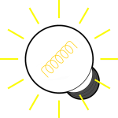

Übung 13: Die Rückkehr der Lauflichter: Teil 1
Eine erste Variante sind die chasing Lights. Dabei muss der Anwender das Lauflicht mit der Maus »jagen«. Immer wenn der Mauszeiger sich über einer Glühbirne befindet, schalten Sie die nächste Birne ein und die aktuelle aus. Versucht der Benutzer, mit dem Mauszeiger die leuchtende Glühbirne zu berühren, springt das Licht auf die nächste über. Er »jagt« quasi das Lauflicht. Bei der letzten Lampe beginnt das Spiel wieder von vorne!
Auch hier gilt: Nach der letzten Lampe fängt das Licht wieder von vorne an zu laufen.
